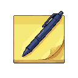
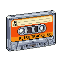
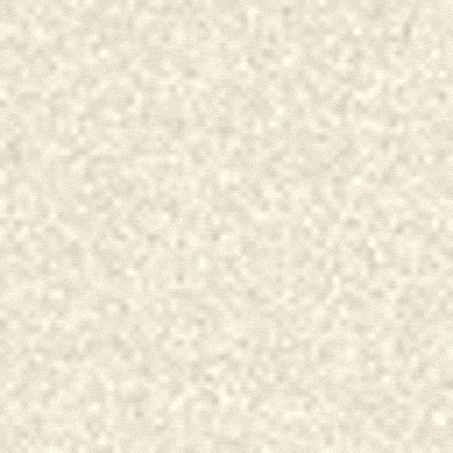

Project KB
Project KB
Q3 architecture decisions
Release syncProject KB
Q3 architecture decisions
Release sync“explain the change i made to the token gate, uh, the allow list one — cite the test”
Tightened the token gate: the component-CSS allow-list now only shrinks — any new raw value fails validate-tokens.cjs. Covered by test_design_token_gate.py.
Project KB

LL-118 types into Terminal